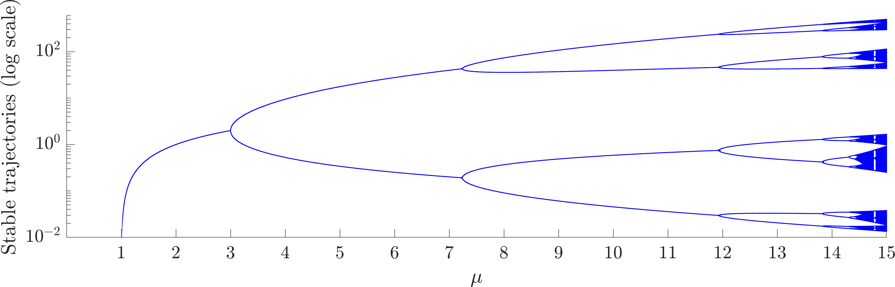
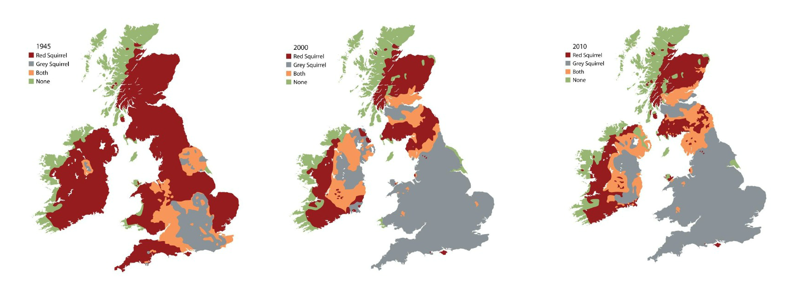
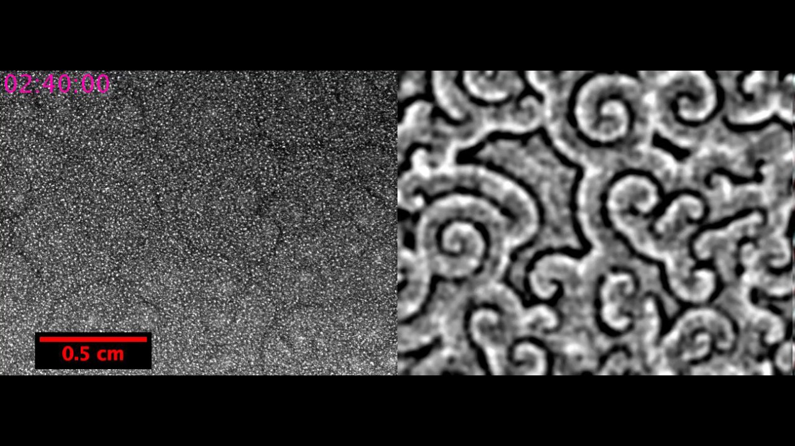

1. Fixing the logistic map
One of the big problems with the discrete logistic equation is that if your initial population is too high then the population will become negative, namely, you can never start with more than the carrying capacity. Many equations have been suggested to correct for this phenomenon. We will be investigating the following:
\[x_{n+1}=f(x_n)=\frac{\mu^3 x_n}{(1+x_n)^3}, \tag{1}\]
where \(\mu\) is a positive constant.
Draw a sketch of \((x,f(x))\) and \((x,x)\) on the same axes. How many non-negative steady states do we expect?
Derive the non-negative steady states, noting any parameter dependencies.
Derive the stability of the steady states, noting any parameter dependencies.
Show that period two oscillatory points, \(x_p\), satisfy
\[\left(1+x_p \right)\left(1+\frac {\mu^3 x_p}{ \left(1+x_p \right)^3} \right)=\mu^2. \tag{2}\]
Solve for \(x_p\) by following the following steps.
Rewrite equation (2) as a cubic in \(y=1+x_p\).
Note that \(x_s=\mu-1\) is a steady state (that you should have found in question 2) and remember that any steady state is also a solution of equation (2). Using this knowledge rewrite the cubic in \(y\) in the form
\[(y-\mu)(y^2+ay+b)=0 \tag{3}\]
where \(a\) and \(b\) should be defined in terms of \(\mu\).
Solve \(y^2+ay+b=0\) and hence derive \(x_p\), noting any parameter dependencies.
Calculating the stability of the period two states is very hard to do by hand. However, explain how it would be done. Namely, define the inequality that would have to be calculated.
The bifurcation diagram of equation (1) is shown in Figure 1; note the logarithmic \(y\)-axis. Explain what it shows and how it compares with the results you have generated in this question.

Figure 1. Bifurcation diagram of equation (1); note the logarithmic \(y\)-axis.
2. Squirrels

Evolution of the spatial distribution of red and grey squirrels over time from the UK government’s science blog.
Consider an infinite one-dimensional domain, in which grey, \(G\), and red, \(R\), squirrel populations undergo the following interactions:
Both grey and red squirrel populations move randomly through their domains with rates \(D_G\) and \(D_R\), respectively.
Grey squirrels are born at a rate proportional to their population, where the proportionality constant is \(b_1\).
Red squirrels are born at a rate proportional to their population, where the proportionality constant is \(b_2\).
Both squirrel populations compete internally with members of their own population (i.e. grey compete with grey and red compete with red, respectively). Namely, whenever two members of the same population interact one of the members is suppressed. The constant of proportionality is \(d_1\) for the grey squirrels and \(d_2\) for the red squirrels.
The squirrels also compete across species. Namely, a grey and a red squirrel interaction can lead to a reduction in red squirrels, or a reduction in grey squirrels. The rate of proportionality for the reduction of grey squirrels is \(c_1\), whilst the rate of proportionality for the reduction of red squirrels is \(c_2\).
Ignoring movement for a moment, write down the interaction equations specified by the above description.
Show that the interaction equations and movement description lead to the following PDEs,
\[\begin{align} \frac{\partial G}{\partial t}&=D_G\frac{\partial^2 G}{\partial x^2}+b_1G-d_1G^2-c_1RG,\tag{4}\\ \frac{\partial R}{\partial t}&=D_R\frac{\partial^2 R}{\partial x^2}+b_2R-d_2R^2-c_2RG. \tag{5} \end{align}\]
Non-dimensionalise the system to produce the following equations,
\[\begin{align} \frac{\partial u}{\partial \tau}=&\frac{\partial^2 u}{\partial X^2}+u(1-u-\alpha_{12}v),\tag{6}\\ \frac{\partial v}{\partial \tau}=&D\frac{\partial^2 v}{\partial X^2}+\rho v(1-v-\alpha_{21}u). \tag{7} \end{align}\]
What are the parameter groupings \(D\), \(\rho\), \(\alpha_{12}\) and \(\alpha_{21}\) in terms of \(b_1\), \(b_2\), \(d_1\), \(d_2\), \(c_1\) and \(c_2\)?
Find all homogeneous steady states of the system, noting any parameter dependencies that need to be satisfied for the steady state to exist.
Calculate the stability of the trivial homogeneous steady states. Namely, those in which one of the populations is zero, noting parameter dependencies of the stability criterion.
Hint: you should find there are four cases:
\(\alpha_{12}<1\) and \(\alpha_{21}<1\);
\(\alpha_{12}<1\) and \(\alpha_{21}>1\);
\(\alpha_{12}>1\) and \(\alpha_{21}<1\);
\(\alpha_{12}>1\) and \(\alpha_{21}>1\).
Calculating the stability of the fourth steady state,
\[(u_s,v_s)=\frac{1}{1-\alpha_{12}\alpha_{21}}(1-\alpha_{12},1-\alpha_{21}), \tag{8}\]
leads to a complicated eigenvalue calculation and we will use curve sketching in the next question to consider the stability of this steady state.
Sketch the \((u,v)\) phase plane in each of the cases (a)-(d). You should include: the nullclines; annotations regarding the signs of \(\text{ d}u/\text{ d}\tau\) and \(\text{ d}v/\text{ d}\tau\) in each region delineated by the nullclines; accompanying directional arrows in each region; directional arrows on the nullclines; and, finally, trajectories illustrating the expected evolution with initial conditions taken from each region.
Use these sketches to determine the stability of \((u_s,v_s)\), when it exists.
Describe what happens to the grey and red squirrels in each of the cases (a)-(d).
By considering Figure 2 and question 8 what parameter region do you think we are in?
Can the non-zero steady state, \((u_s,v_s)\), undergo a Turing instability?
Now suppose we fix some constants and begin to consider the spatial aspects of the problem. Namely, let \(D=1\), \(\rho=1\), \(\alpha_{12}=1/2\), \(\alpha_{21}=3/2\). Further, suppose we supply the boundary conditions \(u(-\infty)=1\), \(v(-\infty)=0\) and \(u(\infty)=0\), \(v(\infty)=1\) and initial condition \(u=0\), \(v=1\) almost everywhere.
What do these parameters, boundary and initial conditions mean in terms of the biology of the problem?
Provide a guess as to how the population will evolve.
Convert equations (6) and (7) into a moving frame of reference by converting the coordinates \((X,\tau)\) into \((z,\tau)\) where \(z=X-c\tau\) and \(c\) is a positive constant.
If we define \(s=u+v\) then show that a travelling wave with a stationary profile satisfies
\[0=\frac{\text{ d}^2 s}{\text{ d}z^2}+c\frac{\text{ d}s}{\text{ d}z}+s(1-s), \tag{9}\]
where you should also specify the boundary and initial conditions.
By inspection offer a simple solution to equation (9).
Deduce that, under the given conditions,
\[0=\frac{\text{ d}^2 u}{\text{ d}z^2}+c\frac{\text{ d}u}{\text{ d}z}+(1-\alpha_{12})u(1-u). \tag{10}\]
Show that equation (10) can support a travelling wave solution if \(c\geq 2\sqrt{1-\alpha_{12}}\).
Having looked at equations (4) and (5) in a number of ways return to question 12. Have your thoughts about the spatio-temporal evolution of the red and grey squirrel populations changed? Does this model represent what is happening in Figure 2?
3. Amoebae movement
The amoebae of the slime mould Dictyostelium discoideum secrete a chemical attractant, cyclic-AMP. The attractant diffuses away from the amoebae source and attracts other amoebae to it, causing spatial aggregations to form, see Figure 3 and the linked YouTube video.

Single frame of a spatio-temporal wave pattern made by Dictyostelium discoideum. The full video can be found on YouTube. Have a watch to see how the pattern is generated from randomness.
In the following assume that we are on an infinite, one-dimensional domain so that we can be loose with boundary conditions.
The attractant (concentration denoted \(a\)) is secreted by the amoebae (concentration denoted \(n\)) at a rate proportional to the amoebae concentration. The attractant is able to diffuse and the attractant decays at a rate proportional to the attractant’s concentration.
Justify the following equation for the attractant population,
\[\frac{\partial a}{\partial t}=D_a\frac{\partial^2 a}{\partial x^2}+k_1n-k_2a. \tag{11}\]
The amoebae do not reproduce or degrade; however, alongside their diffusive motion (Figure 4(a)) they also undergo attractant-controlled motion (chemotaxis, as shown in Figure 4(b)).
(a) Schematic of diffusive motion
(b) Schematic of chemotaxis
Different motion types of the amoebae.
Using the process of considering an infinite discretised domain, derive the equation of the amoebae movement. Show that, upon taking a continuum spatial limit the equations can be simplified to
\[\frac{\partial n}{\partial t}=D_n\frac{\partial^2 n}{\partial x^2}-\chi\frac{\partial }{\partial x}\left(n\frac{\partial a}{\partial x}\right). \tag{12}\]
where \(D_n\) and \(\chi\) should be defined in terms of \(D'_n\), \(\chi'\) and \(\Delta x\).
We now consider the system
\[\begin{align} &\frac{\partial n}{\partial t}=D_n\frac{\partial^2 n}{\partial x^2}-\chi\frac{\partial }{\partial x}\left(n\frac{\partial a}{\partial x}\right),\tag{13}\\ &\frac{\partial a}{\partial t}=D_a\frac{\partial^2 a}{\partial x^2}+n-a. \tag{14} \end{align}\]
where we have set \(k_1=1=k_2\). The system is on an infinite one-dimensional domain. The boundary conditions are zero-flux and the initial conditions are uniformly distributed random perturbations about a mean of \(n=a=1\) and range 1/10.
What are the spatially homogeneous steady states \((n_s,a_s)\) of system (13)-(14)?
Perturb around this homogeneous steady state using a spatial perturbation and derive conditions under which the homogeneous steady state will evolve to a patterned state.
Experimentally, \(\chi\) is seen to increase during the life cycle of the slime mould. What does this mean? What would you expect to see over the course of the experiment?